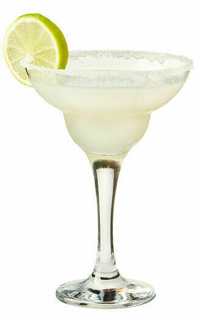

Маргарита

Коктейль латиноамериканского происхождения, появление датируется примерно промежутком 1936—1948. Одна из самых популярных версий называет создательницей коктейля Маргариту Сеймз, смешавшую коктейль в Акапулько на приеме Томма Хилтона — владельца сети отелей Hilton. Хилтон распространил этот рецепт в барах и ресторанах своих гостиниц.